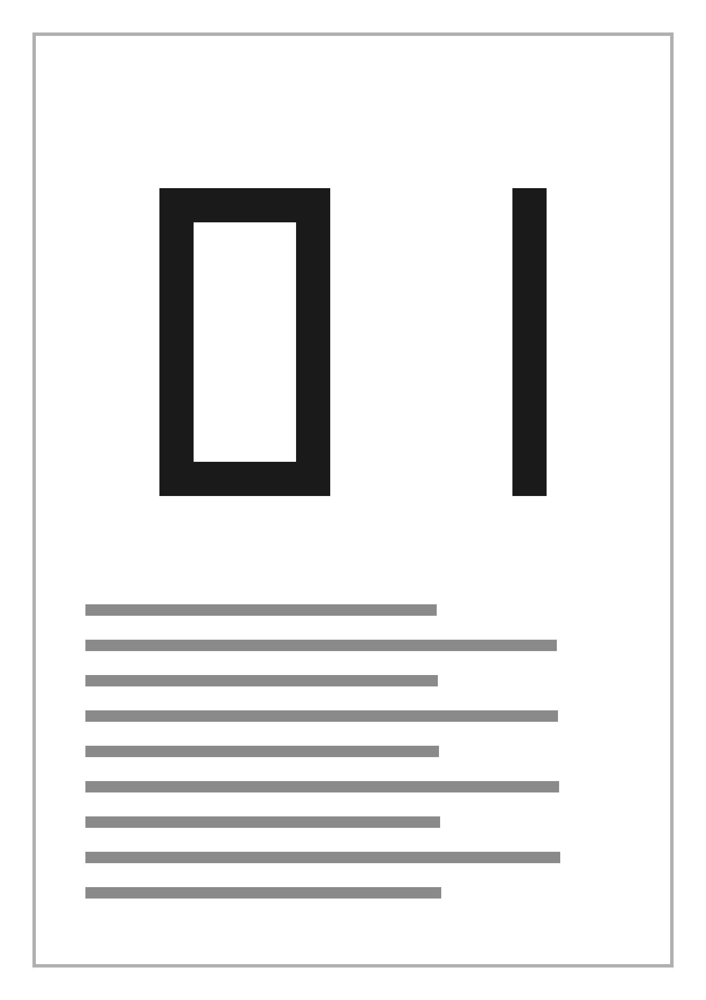
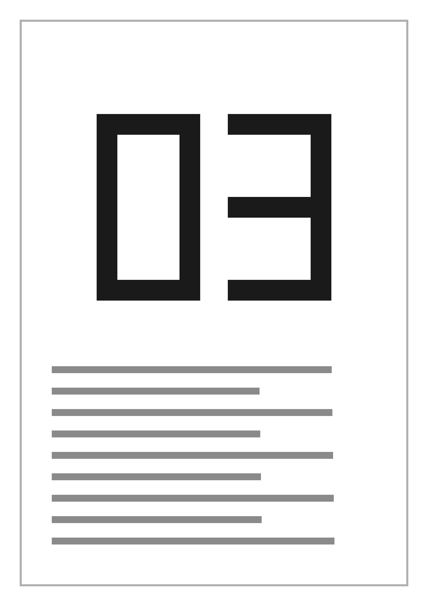
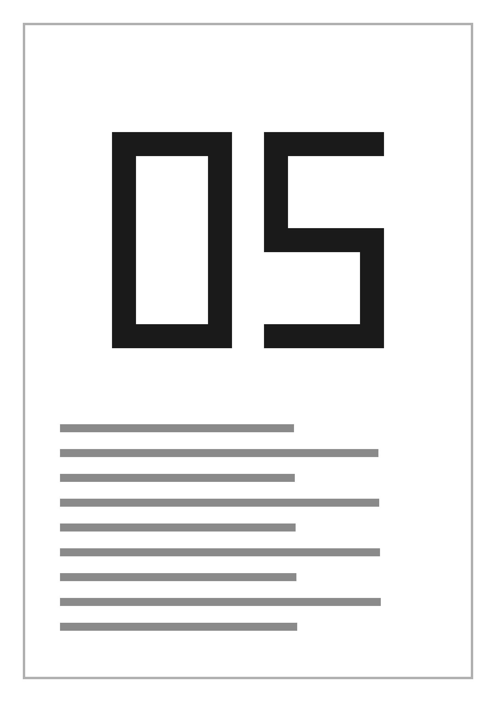
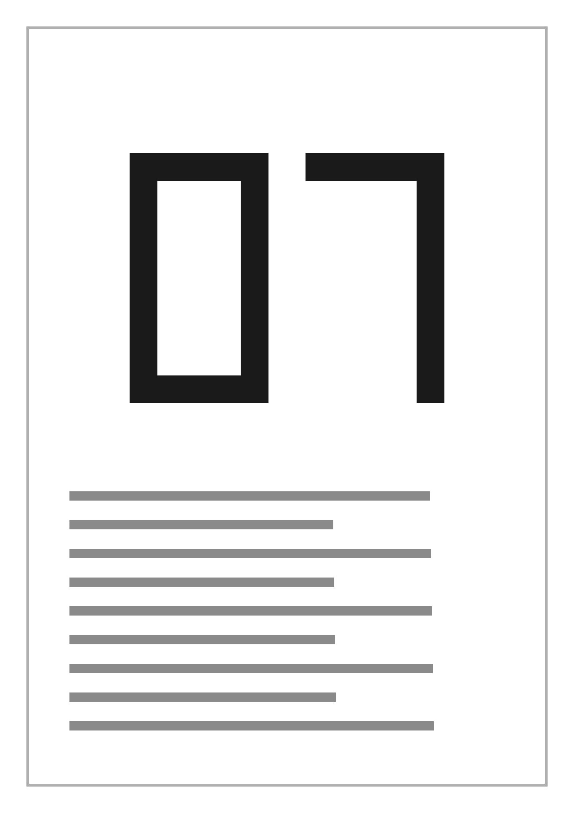
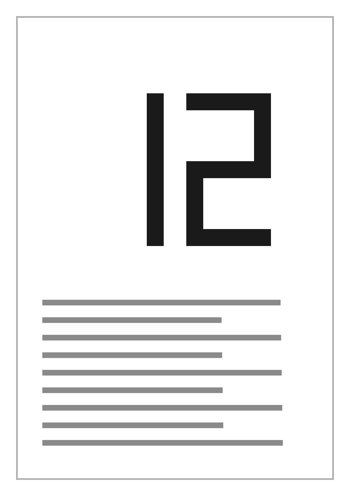
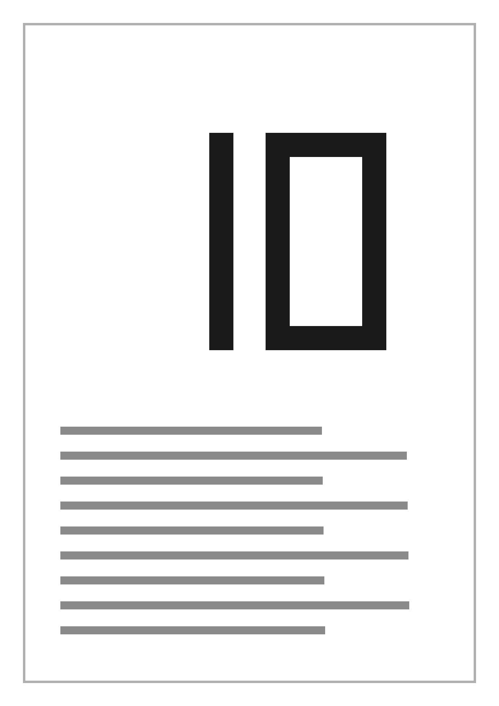
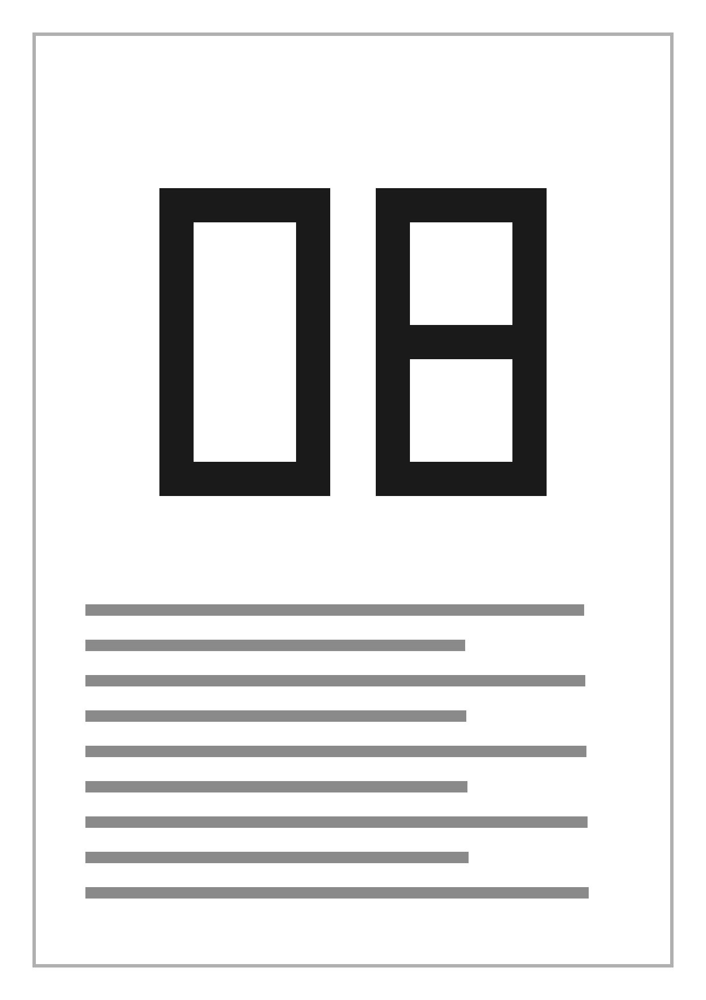

Стартовый экран: запомненный сканер готов, параметры сканирования, запуск первого прохода.
НОВОЕ СКАНИРОВАНИЕ
Сканируем обе стороны в два прохода
Сначала лицевые стороны всех листов. Потом вы развернёте их на 180° — все разом, не переворачивая — и приложение само сопоставит обороты с лицами.
ScanPro 200
готов
Цвет
Разрешение
Размер листа
Пустые обороты
Выравнивание
Положите листы в лоток лицом вверх, первая страница сверху
Стартовый экран: запомненный сканер готов, параметры сканирования, запуск первого прохода.
SCAN SETUP
Scanning both sides in two passes
First the front sides of all sheets. Then you turn them 180° — all at once, without flipping — and the app matches the backs to the fronts on its own.
ScanPro 200
ready
Color
Resolution
Paper size
Blank backs
Straightening
Load the sheets into the tray face up, first page on top
Модалка выбора сканера: найденные в сети устройства и ручной ввод адреса.
НОВОЕ СКАНИРОВАНИЕ
Сканируем обе стороны в два прохода
Сначала лицевые стороны всех листов. Потом вы развернёте их на 180° — все разом, не переворачивая — и приложение само сопоставит обороты с лицами.
ScanPro 200
готов
Цвет
Разрешение
Размер листа
Пустые обороты
Выравнивание
Положите листы в лоток лицом вверх, первая страница сверху
Добавить сканер
СЕТЕВЫЕ СКАНЕРЫ
ScanPro 200
192.0.2.10:443
готов
EPSON ET-3850
192.0.2.24:443
готов
ВВЕСТИ АДРЕС
Модалка выбора сканера: найденные в сети устройства и ручной ввод адреса.
SCAN SETUP
Scanning both sides in two passes
First the front sides of all sheets. Then you turn them 180° — all at once, without flipping — and the app matches the backs to the fronts on its own.
ScanPro 200
ready
Color
Resolution
Paper size
Blank backs
Straightening
Load the sheets into the tray face up, first page on top
Add scanner
NETWORK SCANNERS
ScanPro 200
192.0.2.10:443
ready
EPSON ET-3850
192.0.2.24:443
ready
ENTER ADDRESS
Идёт первый проход: подача (анимация), счётчик, параметры, лента последних пяти страниц.
СКАНИРУЕМ ЛИЦЕВЫЕ СТОРОНЫ
Отсканировано 4
300 dpi · оттенки серого · A4




Идёт первый проход: подача (анимация), счётчик, параметры, лента последних пяти страниц.
SCANNING FRONT SIDES
Scanned 4
300 dpi · grayscale · A4
Второй проход: счётчик «N из M» — число листов известно по первому проходу.
СКАНИРУЕМ ОБОРОТЫ
Отсканировано 3 из 6
300 dpi · оттенки серого · A4



Второй проход: счётчик «N из M» — число листов известно по первому проходу.
SCANNING BACKS
Scanned 3 of 6
300 dpi · grayscale · A4
Пауза между проходами: развернуть пачку и вставить в лоток (анимация разворота).
ШАГ 2 ИЗ 3 · ЛИЦА ГОТОВЫ: 6 листов
Разверните листы на 180° — все разом
Переворачивать не нужно: из податчика листы вышли оборотами вверх. Возьмите все листы разом, разверните на 180° и положите обратно в лоток.
↑ВЕРХ
все листы разом — разворот на 180°
✓Проверьте входной лоток: в нём не должно остаться листов. Оставшийся лист не отсканирован.
✓Не переворачивайте листы — из податчика они вышли оборотами вверх.
✓Не меняйте порядок листов: обороты придут в обратном порядке, приложение это учтёт.
✓Если один лист застрял — начните второй проход и вставьте его отдельно.
Пауза между проходами: развернуть пачку и вставить в лоток (анимация разворота).
STEP 2 OF 3 · FRONTS DONE: 6 SHEETS
Turn the sheets 180° — all at once
No flipping needed: the sheets came out of the feeder backs up. Take all the sheets at once, turn them 180° and put them back in the tray.
↑TOP
all sheets at once — turn 180°
✓Check the input tray: no sheets should be left in it. A sheet left behind was not scanned.
✓Do not flip the sheets — they came out of the feeder backs up.
✓Do not change the order of the sheets: the backs come in reverse order, the app accounts for that.
✓If one sheet got stuck — start the second pass and feed it separately.
Пауза ~1,6 с после второго прохода: иллюстрация «пары» (B-5), строка состояния, затем editor.
Сопоставляем лица и обороты
совпало пар: 6
Пауза ~1,6 с после второго прохода: иллюстрация «пары» (B-5), строка состояния, затем editor.
Matching fronts and backs
pairs matched: 6
Редактор: лента по документам (граница после 6-й страницы), превью, инспектор; один оборот помечен «ПУСТО».
Договор арендыдокумент 1 из 2 · стр. 1 из 6
Есть несохранённые изменения
Редактор: лента по документам (граница после 6-й страницы), превью, инспектор; один оборот помечен «ПУСТО».
Договор арендыdocument 1 of 2 · page 1 of 6
Unsaved changes
Сохранение: имена файлов документов и папка. После записи модалка сменяется ИТОГом (высота — B-4).
Договор арендыдокумент 1 из 2 · стр. 1 из 6
Есть несохранённые изменения
Сохранить 2 файла
ЧТО СОХРАНЯЕМ
ФАЙЛЫ · 2
1.pdf6 стр.
2.pdf6 стр.
ПАПКА
C:\Users\Анна\Documents\Сканы
Файлов
2
Страниц всего
12
Пустых оборотов
помечен 1 — останется в файле
Формат
PDF
Сохранение: имена файлов документов и папка. После записи модалка сменяется ИТОГом (высота — B-4).
Договор арендыdocument 1 of 2 · page 1 of 6
Unsaved changes
Save 2 files
WHAT TO SAVE
FILES · 2
1.pdf6 pages
2.pdf6 pages
FOLDER
C:\Users\Анна\Documents\Сканы
Files
2
Total pages
12
Blank backs
1 marked — stays in the file
Format
PDF
Досканирование к документу: двустороннее или одностороннее, место вставки.
Договор арендыдокумент 1 из 2 · стр. 1 из 6
Есть несохранённые изменения
Добавить страницы к документу
Новые страницы станут отдельным набором — их можно двигать, поворачивать и удалять, как остальные.
ЧТО СКАНИРУЕМ
КУДА ВСТАВИТЬ
ScanPro 200готов · 300 dpi · оттенки серого · A4
Досканирование к документу: двустороннее или одностороннее, место вставки.
Договор арендыdocument 1 of 2 · page 1 of 6
Unsaved changes
Add pages to the document
The new pages become a separate set — you can move, rotate and delete them like the rest.
WHAT TO SCAN
WHERE TO INSERT
ScanPro 200ready · 300 dpi · grayscale · A4
Новое сканирование закрывает сессию: страницы стираются с диска — только через эту модалку.
Договор арендыдокумент 1 из 2 · стр. 1 из 6
Есть несохранённые изменения
ЕСТЬ НЕСОХРАНЁННЫЕ ИЗМЕНЕНИЯ
Начать новое сканирование?
Последние изменения не сохранены в файл. Если начать новое сканирование, 12 стр. будут удалены с диска.
Новое сканирование закрывает сессию: страницы стираются с диска — только через эту модалку.
Договор арендыdocument 1 of 2 · page 1 of 6
Unsaved changes
UNSAVED CHANGES
Start a new scan?
The latest changes are not saved to a file. If you start a new scan, 12 pages will be deleted from disk.
Проходы не сошлись: лица и обороты лежат раздельными наборами, модалка объясняет, что делать.
Проходы не сошлись: лицевых 6, оборотных 5
Есть несохранённые изменения
НЕ СХОДЯТСЯ ПРОХОДЫ
Лицевых сторон 6, оборотов — 5
Скорее всего, лист не прошёл через податчик или слипся с соседним. Документ пока не собран: лица и обороты лежат отдельными наборами в порядке будущего документа, ничего не удалено. Найдите в наборе оборотов место пропуска, выберите оборот перед ним и досканируйте недостающий кнопкой «+ Добавить листы» — или удалите лицо без пары. Когда наборы уравняются, нажмите «Собрать документ».
Проходы не сошлись: лица и обороты лежат раздельными наборами, модалка объясняет, что делать.
The passes do not match: 6 fronts, 5 backs
Unsaved changes
PASSES DO NOT MATCH
6 front sides, 5 backs
Most likely a sheet did not go through the feeder or stuck to the next one. The document is not assembled yet: the fronts and backs lie as separate sets in the order of the future document, nothing is deleted. Find the gap in the set of backs, select the back before it and scan the missing one with “+ Add sheets” — or delete the front without a pair. When the sets are balanced, press “Assemble document”.